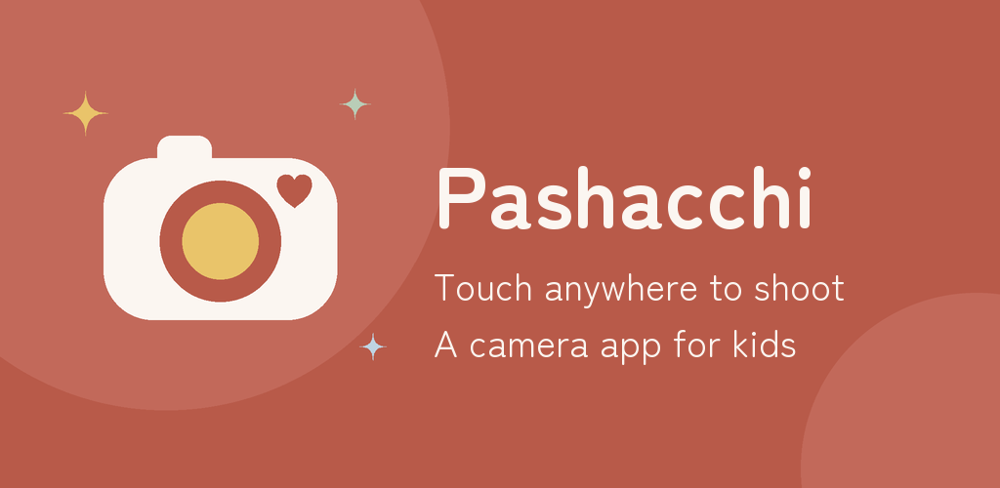
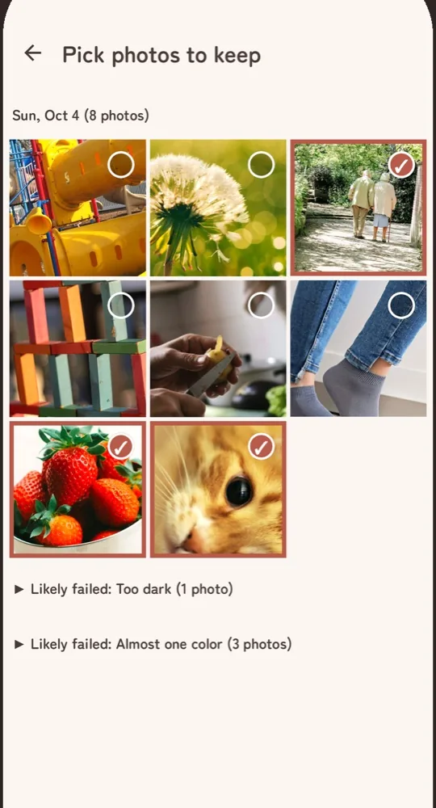
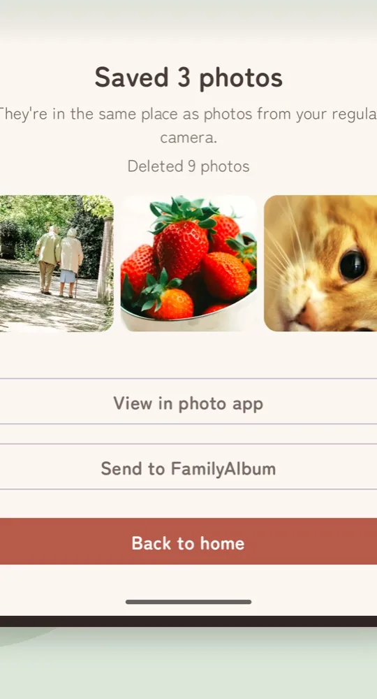
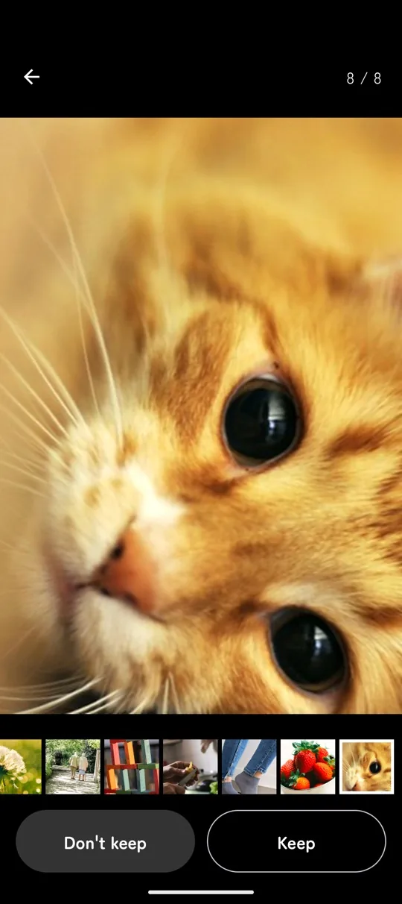

Touch anywhere.
Snap.
Your child shoots. You pick what to keep.
An app that turns your phone into a kids' camera.
Free. Android 10 or later. iPhone version in the works.
Handing over your phone
means cleaning up after.
Made by one parent, after handing a phone to a two-and-a-half-year-old daughter.
-
Before
Your photo library fills up with pitch-black and blurry shots.
PashacchiNew photos wait inside the app. Only the ones you pick reach your photo app.
-
Before
You look over and they've opened another app or changed a setting.
PashacchiThe phone stays locked to the camera while shooting. Only someone who can answer a multiplication question gets out.
-
Before
They can't find the shutter button, miss the shot, and lose interest.
PashacchiTouch anywhere on the screen to shoot. Every shot bursts with stars and hearts.
Hand it over. Pick. Keep.

-
1
Hand it to your child
Tap "Start camera" and pass the phone. Your child shoots as much as they like.
-
2
You pick
When you have a moment, mark the photos to keep.

-
3
Keep them in your photo app
Only the photos you picked go to your usual photo app. The rest are deleted.

What else it does.
-
Capture your child's face, too
The back and front cameras shoot at the same time, combined into one photo. You keep what your child saw and the look on their face. Supported phones only.
-
Pick one big photo at a time
Tap "Keep" or "Don't keep" to move to the next photo. Pinch to zoom and check for blur.

-
Failed shots are set aside
Very dark and almost single-color photos are gathered at the end of the list. Nothing is deleted without you.
-
Send to FamilyAlbum in one go
Hand your saved photos straight to the FamilyAlbum app.
-
A reminder to pick
If photos are still waiting, you get a notification 1 day and 7 days after the last shot. Nothing more.
Family photos
stay on your phone.
-
Never goes online
The app cannot connect to the internet. Neither photos nor usage data leave your phone.
-
No ads
No ads and no outside links on the screens your child touches.
-
No location in photos
Where a photo was taken is not recorded. Share it to FamilyAlbum or social media and your home or park stays private.
-
Only camera and notifications
No access to your photo library, contacts or microphone is requested.
Before you buy one,
try your phone.
| What we compare | Toy kids' camera | Your phone with Pashacchi |
|---|---|---|
| Price | The price of the camera | Free. Pay once to lift the save limit |
| What you need | The camera and an SD card | Just the phone you already have |
| On outings | One more thing to carry | Nothing extra |
| Getting the photos | Copy them off the SD card | The ones you keep go to your photo app, and to FamilyAlbum in one go |
| Picture quality | Varies by model | Your phone's own camera |
| When it's outgrown | The camera stays in a drawer | Just uninstall |
| "My own camera" feeling | Yes | No |
Which one fits depends on your family. Not sure yet? Read Before you buy a kids' camera: toy camera or your phone? first.
Free to use.
Free
$0
- Shoot, pick and delete as many photos as you like
- Save up to 20 photos a month to your photo app
- Beyond 20, nothing is saved and you're told why
Remove the save limit
One-time
Pay once. No subscription. Price shown in Google Play
- Save as many photos as you like
- Everything else as in Free
- Carries over to a new phone with the same Google account
FAQ
Which phones does it work on?
Phones and tablets running Android 10 or later. iPhone and iPad are not supported yet. An iPhone version is in the works. Shooting with both cameras at once works on supported phones only; the welcome screens tell you whether yours is one.
Can I use an old phone I no longer use?
Yes. Any phone running Android 10 or later works, with no SIM and no Wi-Fi. The app never goes online, so you only need a connection to install it and to buy the upgrade; after that it works anywhere. If you worry about drops or loss, an old phone is the one to hand over. The steps are in Turn an old phone into a kids' camera.
What age is it for?
There is no set age. Touching anywhere on the screen takes a photo, so it works even before your child can find a shutter button.
Can my child get back to the home screen?
Not without holding the small button in the top-right corner for 3 seconds and answering the multiplication shown on screen. Three wrong answers in a row lock the input for a while. If you worry about the phone's own buttons being used to unpin, turn on "Ask for PIN before unpinning" in Android settings. The full steps are in Lock your phone to the camera before handing it to your child.
Where are the photos saved?
Before picking, only inside the app. Photos you keep are saved to your usual photo app, so they show up in Google Photos and other backups. The rest are deleted.
What if I uninstall the app or switch phones?
Photos you haven't picked are lost with the app and don't move to a new phone. Pick and save them first. Saved photos carry over like any other photo.
Will my phone run out of space?
There is no limit on how many photos can be taken. When free space runs low, the app stops shooting and takes you to the picking screen.
Can I turn off the shutter sound?
Yes, in the settings.
Do I need FamilyAlbum?
No. Without it, the "Send to FamilyAlbum" button simply doesn't appear.